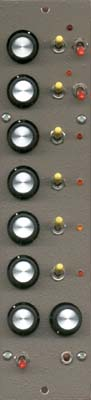

|

Super Psycho Modulation Source for music synthesizers. This module is a much expanded version of the Psycho LFO, featuring six free-running oscillators, each variable between LFO and audio ranges, two of which can be switched to have triangular wave outputs. Each oscillator can be switched between low and high ranges, as well as off, and also has a rate LED, to allow visual determination of the frequency at which it is running. As per the original, there are also level and glide controls. How to use this module: This module can be used to create a range of pseudo-random modulation voltages that can be used to generate unusual sequences, control VCFs or or VCAs etc. When run at higher frequencies, it can be used as a series of audio drones, or to generate complex sounds by frequency modulation a VCO.
The schematic of the Super Psycho Modulation Source. Click here for a larger version. The schematic of the updated power filtering on the R2 PCBs. One of each of the 100n capacitors could be replaced with 10n, or even 220pF to improve the spread of response times to spikes. The Super Psycho Modulation Source is a fairly simple circuit with a lot of repetition. The circuit consists of several distinct blocks. The first are the oscillators, each based on a section of a 40106 hex schmitt inverter and their associated components. The switch allows extra capacitance to be added, reducing the speed of the oscillator to a lower range. The same switch allows the capacitor to be bypassed to the negative rail via a protection resistor, disabling the oscillator, and setting its output to near 0 volts. The 1M pots specified allow the upper frequency range to extend over a large portion of the audio spectrum, and in the lower frequency position, to extend from sub-audio to low audio frequencies. Two of the oscillators are equipped with voltage followers that follow the the roughly triangular shape of the wave present on the oscillator capacitors. The 100k and 470k resistors on the output, when coupled to the virtual ground summing node of the following mixer, via the switch, correct the amplitude and offset of the triangle wave. The next block is a traditional op amp inverting mixer stage. Signals from the six oscillators are mixed through 470k resistors, the overall gain controlled by a 100k pot in the feedback path of the op amp. What is interesting here is that in order to keep the output signal of the mixer positive without the need for an additional inverting stage, the chip used to build the six oscillators is powered from the negative rail, it's positive power pin connected to 0V and its earth pin connected to -15V. Take special note of this, because it is an unusual way to power a digital chip, and inadvertent poking with a logic probe powered from the positive rail could cause you grief! The final stage is a simple glide circuit consisting of a potentiometer, a capacitor and unity gain voltage follower. The switch is to allow easy switching in and out of a preadjusted glide setting. It can be omitted, and a link soldered in its place on the circuit board.
Construction
Before you start assembly, check the board for etching faults. Look for any shorts between tracks, or open circuits due to over etching. Take this opportunity to sand the edges of the board if needed, removing any splinters or rough edges. Most likely you will find no faults.
When you are happy with the printed circuit board, construction can proceed as normal, starting with the resistors first, followed by the IC sockets if used, then moving onto the taller components. Take particular care with the orientation of the polarized components, the electrolytics, LEDs, transistors and ICs. Most likely the LEDs will be panel mounted. I have arranged the board so that connections each oscillator can be run through a 0.1 inch pitch plug and header if desired. When inserting the ICs in their sockets, take care not to accidentally bend any of the pins under the chip. Also, make sure the notch on the chip is aligned with the notch marked on the PCB overlay. The glide and level connections on the PCB can be hard to read as there are usually holes drilled right through them. They are as follows: GS Glide switch
Notes:
Parts list This is a guide only. Parts needed will vary with individual constructor's needs. If anyone is interested in buying these boards, please check the PCBs for Sale page to see if I have any in stock.
Can't find the parts? See the parts FAQ to see if I've already answered the question. Also see the CGS Synth discussion group.
Article, art & design copyright 2001 by Ken Stone
| ||||||||||||||||||||||||||||||||||||||||||||||||||||||||||||||||||||||